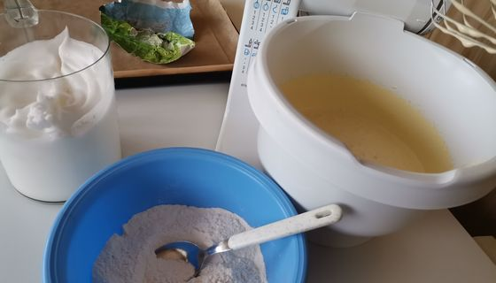
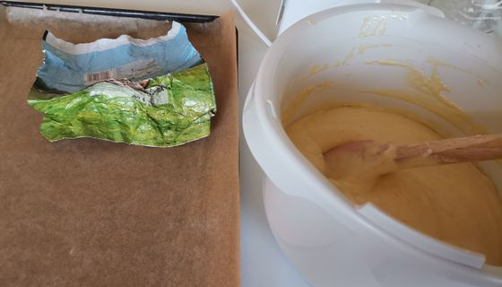
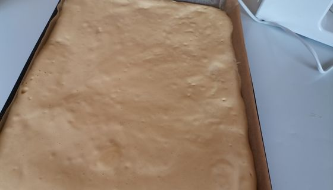
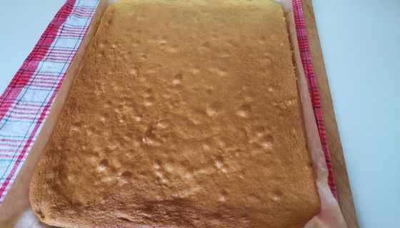
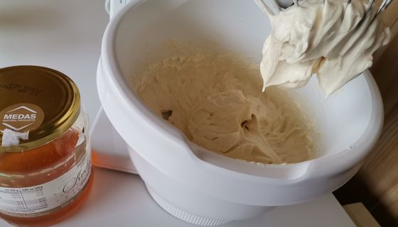
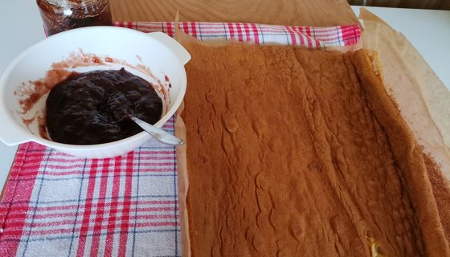
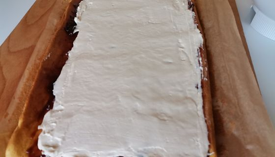
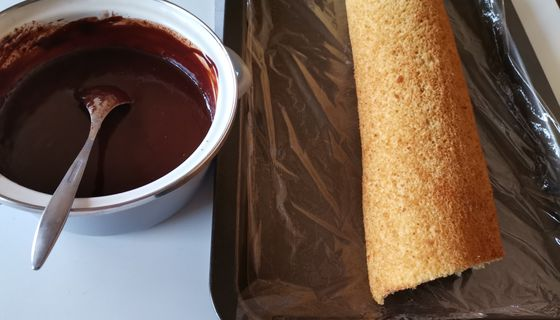
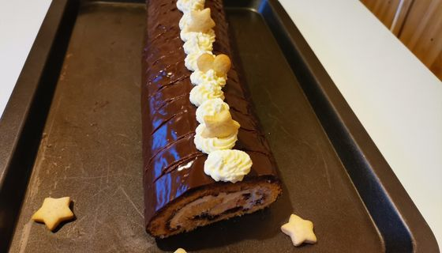

Medová roláda, FOTORECEPT

INGREDIENCIE
Cesto
- 1ks
- Vajce + 4 žĺtky
- 100g
- práškový cukor
- 100g
- tekutý med
- 160g
- múka hladká (tortová)
- 1 ČL
- sóda bikarbóna
- 1ks
- lekvár slivkový na potretie korpusu
Plnka
- 200 g
- čerstvé maslo
- 5 PL
- med
- 250 ml
- plnotučné mlieko
- 2,5 PL
- polohrubá múka
- 150 ml
- šľahačková smotana (33% a viac)
- 150 g
- horká čokoláda - nasekaná na kúsky
Suroviny na cesto.
Vajíčko, žĺtky vymiešame s práškovým cukrom do penista. Múku preosejeme spojíme so sódou bikarbónou po častiach vmiešame do cesta. Bielky vyšľaháme do tuha varechou zľahka vmiešame do cesta.
Plech 30x40cm vyložíme papierom na pečenie potrieme maslom.
Na plech vylejeme pripravené cesto vrch uhladíme.

Rúru predhrejeme na 180 stupňov pečieme 10 minút do zlatista. Upečený korpus za horúca preklopime na mierne vlhkú utierku zrolujeme. Necháme vychladnúť.
V mlieku rozhabarkujeme múku dáme variť uvaríme hustú hladkú kašu. Zakryjeme potravinovou fóliou necháme vychladnúť. Zmäknuté maslo vymiešame s medom spojíme s vychladnutým krémom.
Korpus rozvinieme potrieme domácim slivkovým lekvárom keď máme hustý lekvár zohrejeme v mikrovlnke.
Plnku rozotrieme na pripravený korpus do 3/4. Trocha krému odložíme na zdobenie
Zrolujeme roládu dáme do chladničky stuhnúť. Pripravíme čokoládovú polevu. Smotanu na šľahanie ohrejeme do horúca pridáme čokoládu polámanu na menšie kúsky miešame pokiaľ sa čokoláda nerozpustí hrniec vrátime na sporák miešame pokiaľ sa nám nerobia bublinky (nevaríme).
Roládu polejeme polevou dáme do chladničky stuhnúť. Pred podávaním pokrájame a ozdobíme, dobrú chuť....

{kind=link}
{kind=link}
{kind=link}
{kind=link}
{kind=link}
{kind=link}
{kind=link}
{kind=link}
{kind=link}